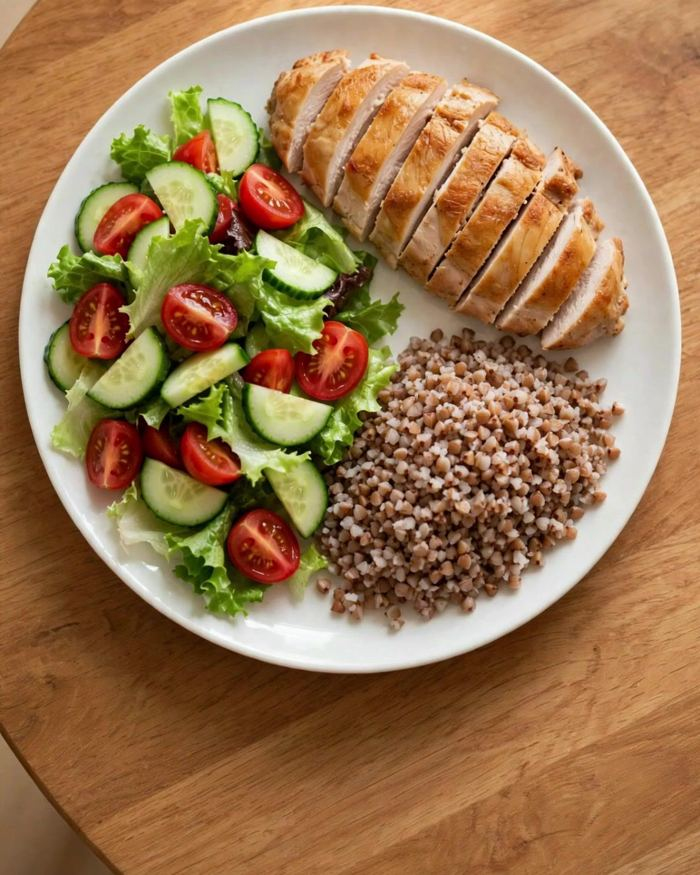

ПОКА МЕНЮ СКАЧИВАЕТСЯ — 5 МИНУТ ЧТЕНИЯ
Почему вес возвращается после диет — и что делать вместо
Если ты здесь, скорее всего, одно из этого тебе знакомо:
- Сбросила к лету 5–10 кг — к Новому году всё вернулось. Иногда с запасом.
- До пятницы держишься идеально, а в выходные «срываешься» и съедаешь всё, что не ела неделю.
- Знаешь наизусть, что «нельзя», но вечером всё равно оказываешься у холодильника.
- «Начну с понедельника» — уже раз двадцатый.
Хочу сразу сказать главное: дело не в слабой силе воли. Так происходит почти у всех, кто худеет через жёсткие ограничения. И у этого есть очень понятная причина.
Диета держится на силе воли. А сила воли заканчивается
Любая строгая диета устроена одинаково: убрать «вредное», урезать порции, терпеть. Первую неделю это даже приятно — весы радуют, ты молодец. А потом запускается цепочка:
Мало еды и много запретов
Постоянный голод и мысли о еде
Вечер пятницы, усталость — срыв
Чувство вины: «всё равно уже сорвалась»
Ешь ещё больше — и снова «с понедельника»
Срыв — это не провал характера, а закономерный финал любой схемы, где ты постоянно голодная и всё время себе что-то запрещаешь. Запрещённое становится самым желанным. Поэтому чем строже диета, тем сильнее откат.
Результат даёт не самая строгая неделя, а самая обычная — которую можно повторять годами.
Что работает вместо: сытость, а не запреты
Когда ты сыта, держаться не нужно — не за что. А сытость зависит не столько от количества калорий, сколько от того, из чего собрана тарелка. Белок и овощи насыщают надолго, гарнир даёт энергию, немного жира — вкус и удовольствие от еды.
Поэтому вместо списка запретов у меня одно правило:

ПРАВИЛО ТАРЕЛКИ
½овощи и зелень — свежие, тушёные, запечённые
¼белок — мясо, рыба, яйца, творог, бобовые
¼гарнир — крупа, паста, хлеб, картофель
Работает с любой едой: дома, в столовой, в гостях. Ничего не нужно взвешивать каждый день — достаточно один раз научиться «видеть» тарелку. И такая тарелка держит сытость 3–4 часа, поэтому вечером не тянет добирать.
А сладкое?
Можно. Правда. Когда сладкое под запретом, оно съедается тайком, стоя, целой пачкой — и с чувством вины. Когда разрешено, хватает пары кусочков к чаю.
Простое правило: сладкое — днём и после еды, а не вместо неё и не на пустой желудок вечером. Поэтому в моём меню каждый день есть десерт — брауни, шоколадный мусс, мороженое.
3 ошибки, из-за которых вес стоит на месте
- Пропускать завтрак и перекус.
Кажется, что так быстрее похудеешь. На деле к вечеру голод такой, что съедается двойная порция — и ещё «что-нибудь сладенькое».
- Считать, что «полезное» можно без меры.
Орехи, гранола, сухофрукты, смузи — отличная еда, но очень сытная по калориям. Большая горсть орехов (50 г) — около 300 ккал, как полноценный перекус.
- Не замечать калории в напитках.
Сок, латте с сиропом, сладкий чай по пять раз в день — это может быть целый приём пищи, который не насыщает. Пить их можно, просто стоит про них помнить.
Почему 3 дня — это только начало
Меню показывает главное: можно есть пиццу, бургер и брауни — и при этом в меру. Но три дня по готовому меню — это ещё не привычка. Привычка — это когда ты сама знаешь, что положить в тарелку в любой день, в кафе, в гостях и после тяжёлой недели. Без меню перед глазами.
Именно для этого я сделала гайд.
 ⬇ Скачать меню (PDF)
⬇ Скачать меню (PDF)